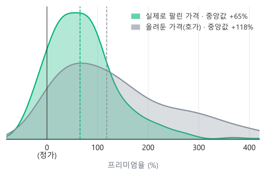

데이터분석 입문 · 주제 발표
중고 피규어의
중고 피규어의
프리미엄은
어디서 올까?
서브컬쳐(애니·게임) 피규어의 중고 가격이
정가보다 오르는 이유를 데이터로 살펴봅니다
키비주얼 이미지
(Google Flow 생성 예정)
(Google Flow 생성 예정)
예시 · 정가 30,000원+200%
30,000원
[이름] · [학번] · 2026.10
핵심 지표
프리미엄율 = (중고가 − 정가) ÷ 정가
왜 금액이 아니라 %로 볼까?
A · 1만 원 → 2만 원+0%
B · 10만 원 → 11만 원+0%
둘 다 1만 원 올랐지만
프리미엄율은 10배 차이가 나요.
그래서 가격이 다른 피규어끼리도
공평하게 비교할 수 있어요.
예시 계산 · 0% 미만이면 정가보다 싸게 팔린 것(마이너스 프리미엄)
분석 범위
피규어 유형 3가지 × 인기 작품 4~6개
작품 선정 기준
애니 원작 + 게임 원작구작 + 신작피규어 수가 충분한 작품
[IP 1]
[IP 2]
[IP 3]
[IP 4]
[IP 5~6]
이미지
스케일
실제 비율로 줄인
고급 피규어
고급 피규어
20~30개
20~30개
20~30개
20~30개
선택
이미지
넨도로이드
2~3등신
데포르메 피규어
데포르메 피규어
20~30개
20~30개
20~30개
20~30개
선택
이미지
경품
쿠지·크레인 게임
경품 피규어
경품 피규어
20~30개
20~30개
20~30개
20~30개
선택
약 15개 그룹 × 20~30개 = 목표 0~450건
+ 확장 후보: 아크릴스탠드
작품 목록과 표본 수는 데이터 수집 후 확정
가설
데이터로 확인할 5가지 질문
H1
한정판이면 더 비쌀까?
한정판과 일반판의 프리미엄율 비교
H2
재판 소식이 나오면 값이 떨어질까?
재판 발표 전후의 중고가 변화
H3
애니 새 시즌이 나오면 값이 오를까?
방영·발표 시점 전후의 가격 비교
H4
인기 캐릭터일수록 더 비쌀까?
같은 작품 안에서 캐릭터 인기와 가격의 관계
H5
오래될수록 더 비싸질까?
출시 후 지난 기간과 프리미엄율의 관계
가설이란?데이터로 맞는지 확인해 볼 ‘예상 답’이에요. 틀려도 그 자체로 발견이에요.
그래프는 가상 데이터로 그린 개념 예시
데이터 출처
데이터는 어디서 모을까?
가격
스루가야 (駿河屋)
일본 대형 중고 매장 · 중고가와 정가
가격
메루카리 · eBay
판매 완료(sold) 기록 · 실제로 팔린 가격
가격
번개장터 · 중고나라
국내 시세 · 이용약관 확인 후 수집
상품 정보
MyFigureCollection
정가 · 출시일 · 제조사 · 한정 여부
인기
Google Trends · AniList · Pixiv
작품 검색량 · 캐릭터 인기 순위
우리 데이터셋
목표 300~0건
피규어 1개 = 데이터 1줄
가격 · 상품 정보 · 인기를 한 줄로 합쳐요
가격3곳
상품 정보1곳
인기3곳
호가보다 판매 완료(sold) 가격을 우선 사용 · 수집은 각 사이트 이용약관 범위 안에서
변수 설계
데이터 한 줄은 이렇게 생겼어요
| 상품 | 유형 | 한정 | 재판 | 출시 후 | 작품 인기 | 캐릭터 인기 | 정가 | 중고가 | 프리미엄율 |
|---|---|---|---|---|---|---|---|---|---|
| A · 1/7 스케일 | 스케일 | O | X | 26개월 | 92 | 88 | 180,000 | 432,000 | +0% |
| B · 넨도로이드 | 넨도 | X | O | 14개월 | 75 | 61 | 65,000 | 68,900 | +0% |
| C · 쿠지 경품 | 경품 | X | X | 8개월 | 81 | 70 | 15,000* | 12,000 | +0% |
| D · 1/7 스케일 | 스케일 | O | X | 40개월 | 64 | 93 | 210,000 | 735,000 | +0% |
Y · 결과
프리미엄율
설명하고 싶은 값
상품 특성
유형 · 한정 · 재판 · 정가
+ 제조사, 상태 H1 · H2
인기
작품 · 캐릭터 인기
검색량·순위 지수 H3 · H4
시간
출시 후 경과 기간
개월 수 H5
표의 값은 가상 데이터 · * 경품은 정가가 없어 기준가 사용 · 인기는 0~100 지수
분석 절차
분석은 이렇게 진행해요
01크롤링
모으기
가격·상품 정보 수집
02데이터 정제
다듬기
환율 통일·이상치 제거
03EDA
둘러보기
그래프로 분포 확인
04t-검정
비교하기
차이가 우연인지 확인
05회귀분석
설명하기
무엇이 가장 큰 요인?
03 둘러보기 미리보기 · 유형별 프리미엄율
05 회귀분석 미리보기
※ 함께 움직인다(상관관계)고 원인(인과관계)인 것은 아니에요 · 차트는 가상 데이터
예상 이슈
미리 생각해 둔 문제와 대응
01
경품 피규어는 정가가 없어요
→
쿠지 1회 가격이나 출시 직후 시세를 기준가로 사용
02
올려둔 가격 ≠ 팔린 가격
→
판매 완료(sold) 가격을 우선 사용 (오른쪽 차트)
03
그룹마다 표본이 적을 수 있어요
→
작품을 고를 때 상품 수를 기준에 넣고 그룹당 20~30개 확보
04
엔 · 달러 · 원화가 섞여 있어요
→
거래한 날의 환율로 모두 원화로 바꿔서 비교
02 · 호가 vs 실제로 팔린 가격

차트는 가상 데이터 · 호가만 쓰면 프리미엄이 실제보다 크게 보일 수 있어요
한계
이 분석으로 말할 수 없는 것
① 상관 ≠ 인과
인기 캐릭터라서 한정판으로 나왔을 수도 있어요.
그래서 결과는 ‘원인’이 아니라 ‘함께 움직이는 경향’으로 말할게요.
② 생존 편향
거래 기록 있음기록 없음 → 데이터에 안 잡힘
거래가 활발한 인기 굿즈만 남아서
프리미엄이 실제보다 높게 보일 수 있어요.
영상·그림은 개념 설명용 예시
일정
앞으로 8주 계획
10월 4주
11월 1주
11월 2주
11월 3주
11월 4주
12월 1주
12월 2주
12월 3주
주제 · 계획 발표
작품 선정 · 수집 코드
데이터 수집
정제 · EDA
그룹 비교 · 회귀분석
사례 분석 · 결과 정리
최종 발표
발표
지금
수업 일정에 맞춰 조정 예정
정리
어떤 피규어가, 왜
어떤 피규어가, 왜
정가보다 비싸질까?
지표프리미엄율
(중고가 − 정가) ÷ 정가
데이터300~450건
유형 3 × 작품 4~6개
방법비교 + 회귀
가설 5개를 데이터로 확인
스케일 +140%넨도로이드 +6%쿠지 경품 −20%한정판 스케일 +250%재판 발표 후 −35%새 시즌 발표 후 +48%
스케일 +140%넨도로이드 +6%쿠지 경품 −20%한정판 스케일 +250%재판 발표 후 −35%새 시즌 발표 후 +48%
감사합니다 · 질문 받을게요흐르는 숫자는 가상 예시 ·